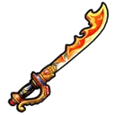

Djinn do Fogo
Espada · Tier 13 · Nível 39
A espada acompanha um djinn com quem é preciso lidar primeiro. Mas ele é meio esquentadinho.
Atributos
Ataque
930
Economia
Valor
5.650.000
Tempo de fabricação
1d 6h
XP do comerciante
235.000
Trabalhadores: Ferreiro 32, Mestre 28, Joalheiro 25
Receita


Marcos do projeto
4
Tempo de fabricação -30%
10
-28 Aço
18
Valor +25%
30
Desbloqueia projeto: Durandal
45
Chance de qualidade +1